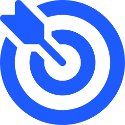
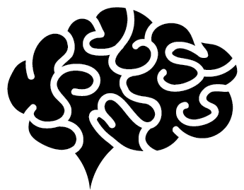
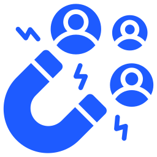

Procesverbetering door automatisering, de 20% die 80% van je tijd kost.
Voor bedrijven in en rondom Breda die vastlopen op handmatig werk en losse systemen. Wij bouwen een
werkende oplossing binnen weken — betaald uit wat het oplevert.
Koffie aan de keukentafel, korte
lijnen. Zo helpen we ondernemend Breda en omstreken écht groeien.

80/20 filter
We automatiseren niet alles. We
pakken juist die 20% van je processen die 80% van het resultaat opleveren.
Strategie én uitvoering
Bij ons is de strateeg ook de
bouwer. Wat we samen bedenken, bouwen we zelf — zonder overdracht, zonder informatieverlies.
Meetbaar resultaat
Meten, dashboarden en bijsturen bij
elke automatisering. Zo baseer je je beslissingen op data, niet op onderbuikgevoel.
Opdrachtgevers & partners

Senss Branding
fraanje software
In vier stappen van gesprek naar meetbaar resultaat.
Geen open einde, geen verrassingen. Vooraf weet je
wat het kost, wat het oplevert en wanneer het klaar is.
1Fase 1
Kennismaking
In dit gesprek bespreken we waar je tegenaan loopt en of
wij iets voor je kunnen betekenen. Geen verplichtingen, geen verkooppraatjes — gewoon kijken of er een
match is.
2Fase 2
Bedrijfsscan
We duiken een dag in jouw processen en zoeken de 20% waar
automatisering het meest oplevert. Binnen een week ligt er een concreet verbetervoorstel op tafel,
inclusief prijs, tijdlijn en verwacht rendement.
3Fase 3
Implementatie
We bouwen de automatisering, koppelen 'm aan je bestaande
systemen en nemen je team stap voor stap mee in het gebruik. Prijs staat vooraf vast, geen
uurtje-factuurtje.
4Fase 4
Meten & meegroeien
We stoppen niet bij livegang: we meten het resultaat,
sturen bij tot de doelen zijn behaald en blijven meedenken over je volgende groeistap.
Skin in the game: wij verdienen alleen als jij verdient
Onze prijs is nooit een los uurtarief. Hij is
gekoppeld aan wat de oplossing jou oplevert. Wij denken in impact, niet in uren.
WIE WIJ ZIJN
Wij zijn Jilles en Rob.
Twee ondernemers uit Breda die geloven dat het MKB dé
motor van Nederland kan zijn — zodra ondernemers weer de tijd krijgen om te ondernemen. Wij zien te vaak
dat die tijd wegvreet aan losse systemen, repetitief werk en beslissingen op onderbuikgevoel, omdat data
verspreid ligt over vijf plekken.
Rob bouwde in New York zijn eerste
automatiseringen voor bedrijven. Jilles werkte als zelfstandig strategisch consultant en helpt ondernemers
hun groeiambitie te vertalen naar concrete KPI's en actiepunten. Toen we voor dezelfde opdrachtgever aan
een project werkten, kwamen die twee werelden bij elkaar: strategie zonder uitvoering blijft een goede
intentie — en die uitvoering bouw je door slimme automatisering in de dagelijkse processen te weven.
Vanaf dat moment sloegen we de handen ineen.
Vandaar Pareto Partners: één plek waar strategie
en uitvoering samenvallen. We beginnen aan de keukentafel, bouwen slimme automatiseringen achter de
schermen, en blijven meten wat het oplevert. Van eerste gesprek, tot laatste meetpunt. Wij geloven dat een
organisatie pas écht vooruitgaat wanneer bedrijfsprocessen automatisch en efficiënt verlopen. Zo ontstaat
ruimte voor groei, innovatie en ondernemerschap.
Lokaal in Breda. Betrokken vanaf dag één.
Waar wij mee helpen.
Elk traject begint bij jouw grootste bottleneck. Pas daarna
bepalen we of automatisering de juiste oplossing is.
Strategie & dashboarding
Van vage groeiambitie naar concrete borging.
Samen met jou en je team scherpen we missie, visie en strategie aan — niet in een rapport dat wij
opleveren, maar in gesprek. Die richting vertalen we naar KPI's die écht kloppen voor jouw bedrijf, en
verwerken we in een dashboard dat iedereen begrijpt en dagelijks gebruikt.
Één overzicht dat je team elke ochtend
opent, met omzet, productiviteit en jaardoelen in samenhang. Altijd actueel, zonder handmatig
exporteren.
CRM & procesautomatisering
Processen die zichzelf afhandelen, van intake
tot facturatie. Wij halen de routine uit handen zodat jij en je team meer tijd hebben voor wat
automatisering nooit kan: écht persoonlijk contact met je klanten. Minder handmatig werk, minder fouten
— meer ruimte voor het werk dat er toe doet.
Van eerste klantcontact tot verstuurde
factuur volledig geautomatiseerd, inclusief koppelingen tussen alle tools die je al gebruikt.

Leadgeneratie
Van handmatige acquisitie naar een
voorspelbare stroom nieuwe klanten. Scraping, outreach, follow-up en automatische CRM-updates lopen op de
achtergrond — jij ziet alleen het resultaat. Automatisering betekent bij ons niet 'kille bot': onze
outreach klinkt zoals jij hem zou schrijven, met karakter, warmte en de tone of voice van je merk.
Elke ochtend een lijst met tien tot
vijftien gekwalificeerde prospects in je CRM, klaar om op te bellen.
AI-assistenten
AI-assistenten die opereren als
een extra teamlid. Voor klantvragen, interne kennisontsluiting, sales-ondersteuning of documentwerk.
Altijd in jouw tone of voice en zoals jouw beste medewerker het zou aanpakken.
Een AI-assistent op WhatsApp die
klantvragen beantwoordt in jullie stijl, plus een interne assistent die kennis vindt die anders in
mailboxen en hoofden verstopt zit.
Niet zeker of we jou kunnen helpen?
Dat weten wij ook niet zonder kennismaking. In een kort
gesprek ontdekken we waar de grootste kansen liggen en of Pareto Partners daarbij kan helpen. Daarna is
de keuze aan jou.
We kiezen de techniek die bij jouw vraag past, en koppelen aan
de systemen die je al gebruikt. Geen nieuw pakket waar je team aan moet wennen.
AI
Taalmodellen die lezen, samenvatten en beslissen, ingebouwd in je processen.
Claude
OpenAI
Cloud & data
Beveiligde portalen, databases en hosting die met je meegroeien.
Azure
Supabase
Vercel
Automatisering & data ophalen
De verbindingen tussen je systemen, en data van buiten naar binnen.
Make
n8n
Apify
CRM, ERP & boekhouding
Koppelingen met de pakketten waar je bedrijf op draait.
Salesforce
Exact Online
Carerix
SSimplicate
MMijnKantoor
VVoys
Altijd de beste oplossing voor jouw situatie
We beginnen niet bij een pakket, maar bij je proces. Daarna
kiezen we de route die het meest oplevert.
Eigen platform of verder bouwen
Soms is een eigen omgeving of portaal de beste keus, soms bouwen
we verder op de systemen die je al hebt. Wij kunnen allebei.
Geen koppeling? Dan bouwen we die
Heeft een systeem geen API, dan bouwen we zelf de verbinding.
Zo lukt het koppelen alsnog.
Wat we al hebben opgeleverd
Deze ondernemers hebben weer tijd voor het échte werk. Klik op een
project voor de hele case: waar ze tegenaan liepen, wat we bouwden en wat het oplevert.
Nieuwe opdrachten vandaag
Interim controllerJobboard A · BredaNieuw
Financial controllerJobboard B · TilburgGebeld
Inclusief contactpersoon, klaar om te bellen
Interim finance · Breda
Nooit meer handmatig zoeken naar opdrachten.
±10 gekwalificeerde leads per week
±2 uur per dag bespaard
Consultant focust op bellen, niet op zoeken
LeadgeneratieBekijk de case
PDF
Jaarrekening
Onepager · gespreksklaar
Omzet
Kosten
Resultaat
Pluspunten
Aandachtspunten
Adviespunten
Accountancy · Breda
Van jaarrekening naar gespreksklaar advies in minuten.
Eerste analyse zonder de PDF te openen
Omzet, kosten en resultaat direct in beeld
Gespreksklaar én commercieel inzetbaar
AI-assistentenBekijk de case
Contractportaal
Interim controllerGetekend
Financieel adviseurBij opdrachtgever
Interim CFOVerstuurd
Getekende PDF terug in het CRM
Interim finance · Breda
Van plaatsing naar getekend contract, zonder overtypen.
Contract opgesteld uit CRM-data
Digitaal getekend, automatisch terug in het CRM
Status van elk contract in één overzicht
CRM-koppelingBekijk de case
1Showroombezoek
2Gesprekken & mails verzameld
AISamenvatting + belmoment
Opvolgtaak in het CRM
Wellness- en productiebranche
Geen showroombezoek meer zonder opvolging.
Elk bezoek krijgt automatisch een opvolgtaak
AI vat gesprekken en mails samen
Telefoongesprekken direct bij de juiste lead
SalesautomatiseringBekijk de case
Profielen in de regio
Filter op doelgroep
KVK-verificatie
Leadportaal
Financiële administratie · Breda
Elke week een verse lijst ondernemers uit de regio.
Leads gevonden zonder handmatig zoekwerk
Rechtsvorm en regio geverifieerd via de KVK
Opvolging per lead in een eigen portaal
LeadgeneratieBekijk de case
In ontwikkeling
Week 46
ma
di
wo
do
vr
Goedgekeurd
Boeking op project in de boekhouding
Vastgoedonderhoud · West-Brabant
Uren schrijven op de bouwplaats, direct in de boekhouding.
Uren per project op de telefoon
Goedkeuren in twee stappen
Goedgekeurde uren direct naar Exact Online
ERP-koppelingBekijk de case
Uitgangssituatie
Een interim financekantoor uit Breda had een medewerker die dagelijks jobboards afstruinde op zoek naar
finance-vacatures, een uur of twee per dag. Toen die capaciteit wegviel, stapelden gemiste kansen zich op.
Wat we bouwden
Scrapers die meerdere jobboards automatisch doorzoeken, de relevante vacatures filteren en inclusief
contactpersoon op één plek klaarzetten. De consultant hoeft alleen nog contact op te nemen: hét werk waar hij
goed in is.
Resultaat
Zo'n tien gekwalificeerde leads per week en ongeveer twee uur per dag terug voor gesprekken in plaats van
zoekwerk.
Uitgangssituatie
Een accountantskantoor in Breda wilde sneller voorbereid aan tafel zitten bij klanten. Voorbereiding kostte
uren per gesprek: tijd die geen omzet opleverde en die accountants liever aan advieswerk besteedden.
Wat we bouwden
Een tool waarbij je een jaarrekening uploadt en binnen minuten een overzichtelijke onepager terugkrijgt:
bedrijfsprofiel, kerncijfers, pluspunten, aandachtspunten en concrete adviespunten. In de huisstijl van het
kantoor, klaar om als gespreksstarter of commercieel instrument in te zetten.
Resultaat
De eerste analyse ligt klaar zonder dat iemand de PDF hoeft te openen. Accountants beginnen het gesprek met
de cijfers al op een rij.
Uitgangssituatie
Bij elke nieuwe plaatsing van een interim professional hoort een contract. Gegevens overtypen uit het CRM,
een Word-document vullen, mailen, wachten op handtekeningen en het getekende stuk weer terugzetten: foutgevoelig
handwerk dat per contract veel tijd kostte.
Wat we bouwden
Een beveiligd portaal dat de gegevens van een plaatsing rechtstreeks uit het CRM (Carerix) haalt. Ontbrekende
gegevens worden automatisch uitgevraagd, het contract wordt in de eigen huisstijl als PDF opgesteld en met één
klik digitaal ter ondertekening verstuurd. Zodra alle partijen getekend hebben, staat het contract automatisch
terug in het CRM en krijgt iedereen bericht.
Resultaat
Contracten zonder overtypen, één vaste werkwijze voor het hele team en altijd zicht op welk contract waar
staat.
Uitgangssituatie
Na een showroombezoek is de opvolging alles. Maar gesprekken, mails en afspraken stonden verspreid, en het
verkoopteam moest zelf bijhouden wie wanneer teruggebeld moest worden. Warme leads vielen tussen wal en schip.
Wat we bouwden
Een automatisering rond Salesforce. Elk telefoongesprek uit de telefooncentrale (Voys) komt automatisch als
activiteit bij de juiste lead. Na een showroombezoek leest AI de volledige klantgeschiedenis (gesprekken, mails
en afspraken), schrijft een korte samenvatting en zet een opvolgtaak met het juiste belmoment klaar voor de
verkoper. Komt een klant opnieuw langs, dan wordt de bestaande taak bijgewerkt in plaats van verdubbeld.
Resultaat
Geen showroombezoek meer zonder opvolging, en een verkoper die elk gesprek begint met de context al voor zich.
Uitgangssituatie
Een administratiekantoor voor zzp'ers en vof's wilde groeien in de eigen regio, maar had geen tijd om zelf
ondernemers te zoeken. Gekochte lijsten waren duur en pasten slecht bij de doelgroep.
Wat we bouwden
Een pijplijn die ondernemers in de regio vindt op basis van hun eigen profiel, bedrijven die niet passen er
automatisch uitfiltert en de rest controleert via de officiële KVK-registratie (rechtsvorm, vestiging,
inschrijfdatum). Dubbele contacten worden herkend. Elke week komt een nieuwe lichting vrij in een eigen
leadportaal, waar de opvolging per lead wordt bijgehouden.
Resultaat
Een voorspelbare stroom van precies de doelgroep, zonder handmatig zoekwerk en met overzicht over wie al
benaderd is.
Uitgangssituatie
Een onderhoudsbedrijf met vaste ploegen en zzp'ers op wisselende projecten. Uren kwamen binnen via briefjes,
appjes en lijstjes en moesten daarna met de hand worden verwerkt in de boekhouding. Zicht op de voortgang per
project ontbrak.
Wat we bouwen
Een app voor op de telefoon waarin medewerkers per dag hun uren op een project schrijven. Voormannen en
directie keuren in twee stappen goed. Per project zie je het team, de uren, de voortgang en een logboek met
foto's. Goedgekeurde uren gaan rechtstreeks als boeking naar Exact Online, op het juiste project. Iedere rol
ziet alleen wat nodig is.
Resultaat
Uren die kloppen en op tijd binnen zijn, projectkosten die actueel in de boekhouding staan en geen overtypwerk
meer. Dit project is in ontwikkeling.